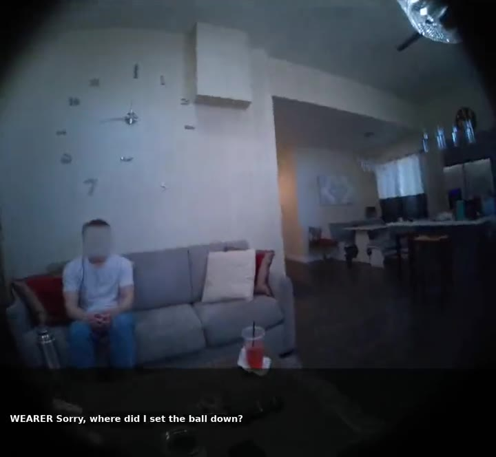
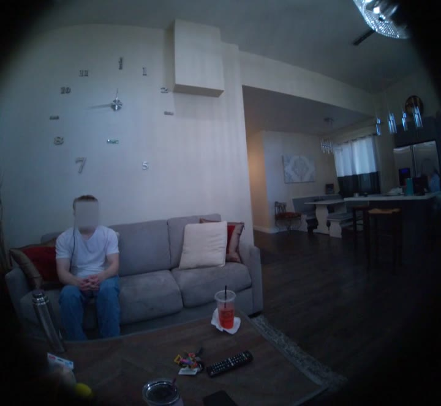
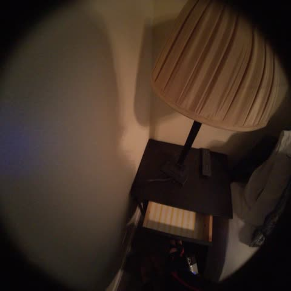
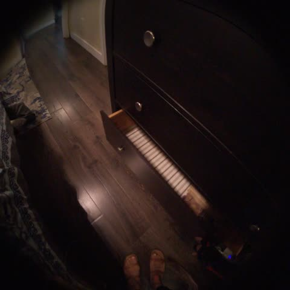
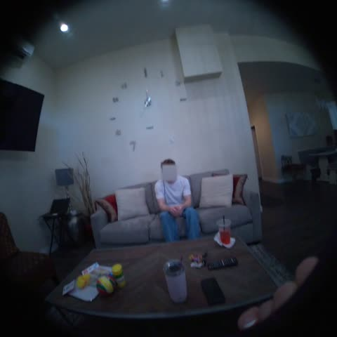
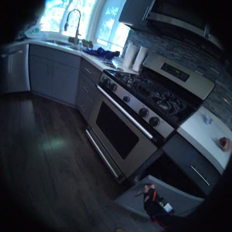
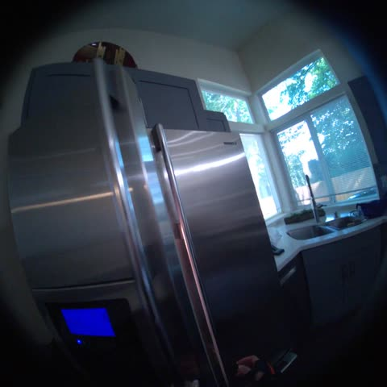
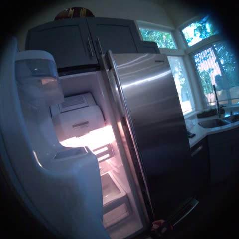

Previous publish
Annotations inside the image
Dialogue and review state were part of the rendered pixels, while most scored labels lacked direct visual verification.
We rebuilt one ten-minute egocentric assistant episode from clean source frames, then composed three alternative conversations with six scored scenarios each from the accepted evidence.
Both frames below show the same source moment at 09:36. The earlier publish burned review text into the pixels; the rebuilt render keeps the video clean.

Dialogue and review state were part of the rendered pixels, while most scored labels lacked direct visual verification.

Questions live in the audio and structured timeline. Reference answers stay separate as text-only evaluation labels.
Each variant uses the same ten-minute visual episode and a different authored conversation. Select a row below the player to jump to that interaction.
Candidate answers were checked against clean frames before chain assembly. These compact pairs show three representative evidence windows.

00:57.5
01:13.0Drawer checking spans about 15.5 seconds, supporting the rounded answer “about sixteen seconds.”

02:13.5
04:09.5The tumbler is set on the center table 116 seconds before the later location question.

04:51.0
04:51.5The reminder fires on the first visible refrigerator opening after it is armed.
Each reference answer makes a claim that can be checked from the episode available at the time of the interaction.
After I left the bedroom, what did I do?
Bathroom, shower door, vanity storage, then exit.
Where did I leave my gray tumbler?
On the center table, set there about two minutes earlier.
What am I doing right now?
Turning the striped ball in both hands.
How long was I checking the bedroom drawers?
About sixteen seconds.
When I open the refrigerator, remind me…
Armed at 04:00; expected trigger at the opening at 04:51.5.
The acceptance gate covers visual evidence, speech rendering, timing, structure, and final media.
The pipeline separates observation, evidence review, conversation composition, and media validation.